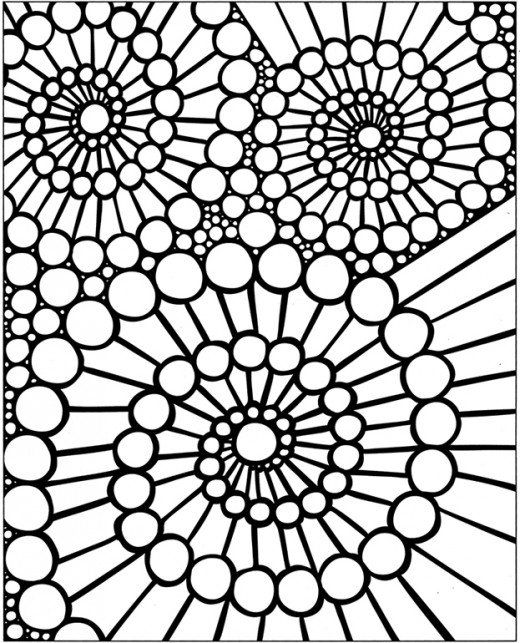
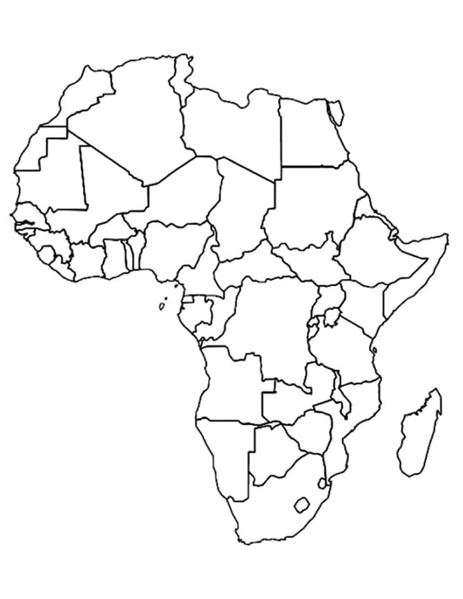
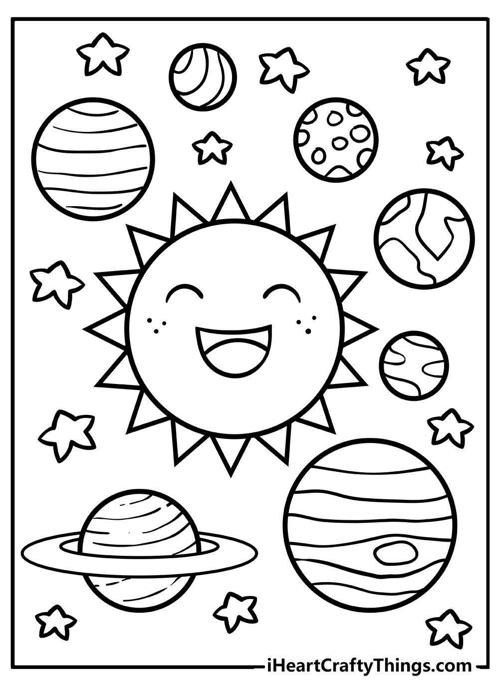

The Four Color Theorem states that no more than four colors are needed to fill in the shapes within a map, with each adjecent side being a different color. Sounds pretty simple right? Well, the Four Color Conjecture was actually discovered in 1852 by Francis Guthrie, but did not become a proof until 1976.
Watch this quick video to learn more about the Four Color Theorem! The video explains the mathematical proofs and history behind the theorem.
Try the theorem out yourself! Pick four colors and try the theorem on any of the coloring pages below.
  